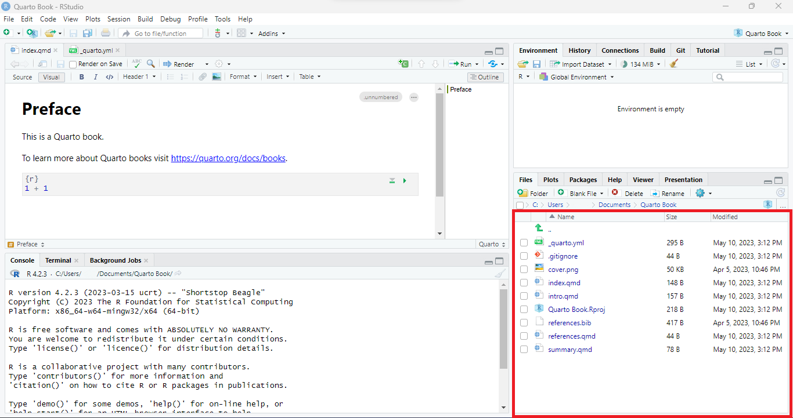

Libros
En esta sección, aprenderás cómo crear un libro utilizando Quarto, el cual consiste en combinar múltiples documentos HTML en un solo documento. Además, Quarto permite hacer referencias cruzadas entre diferentes capítulos para mejorar la navegación y la experiencia del usuario.
Plantilla básica
Quarto cuenta con plantillas, lo cual resulta muy práctico al momento de comenzar un proyecto y personalizarlo según las necesidades específicas. Para esto:
Abre RStudio
En la parte superior derecha, selecciona
Projecty despuésNew Project.
Es recomendable guardar el proyecto en un nuevo directorio para mantenerlo organizado y evitar confusiones.
Selecciona
Quarto Bookque es el documento que estamos interesados crear.
Es recomendable seleccionar la opción
Create a git repositoryen caso de que se desee mantener un control de versiones y ser publicado en GitHub. Además, para mantener un ambiente único del proyecto seleccionar la opciónOpen in new session.
De esta manera, deben aparecer los documentos necesarios para crear todo el libro. 
Renderizar el libro seleccionando
Buildy luego enAll FormatsAl final, debemos tener el siguiente libro creado de la plantilla básica de Quarto.

Estructura del libro
El documento previamente creado consta de cuatro capítulos, con el contenido de cada capítulo en los archivos index.qmd, intro.qmd, summary.qmd y references.qmd. Para poder agregar cada capítulo al libro, es obligatorio incluirlos en el archivo _quarto.yml en el orden en que se desee visualizar, como se muestra a continuación:
# Archivo: _quarto.yml
project:
type: book
book:
title: "Quarto Book"
author: "Norah Jones"
date: "10/5/2023"
chapters:
- index.qmd
- intro.qmd
- summary.qmd
- references.qmd
bibliography: references.bib
format:
html:
theme: cosmo
pdf:
documentclass: scrreprt
editor: visualEste documento es esencial, ya que establece la configuración inicial del libro. En términos generales, para todos los tipos de documentos en Quarto es necesaria esta configuración. En este documento se detalla el tipo de documento (Project), la estructura del libro (book), la bibliografía con las referencias necesarias para el libro (bibliography), el formato del libro (format), entre otros aspectos importantes.
Características más avanzadas - Proyecto
Con el propósito de servir como guía, una vez creado el documento base, vamos a crear un libro sobre cómo crear tablasde resumen en R, como se observa a continuación:
El objetivo es crear un libro con características más avanzadas, en el que se puedan explorar las diferentes configuraciones y personalizaciones que Quarto ofrece para mejorar la presentación y la experiencia de usuario.
Configuración inicial: _language.yml
Como se puede apreciar en la figura anterior, hay títulos que no se pueden modificar directamente en el cuerpo del documento (como “Author”, “Table of contents”, etc.), por lo tanto, existen al menos dos formas para corregir esto:
- Crear un archivo _language.yml y añadirlo al espacio de trabajo. En este archivo podemos modificar directamente el título deseado.
El contenido del archivo es el siguiente:
toc-title-document: "Tabla de contenido"
toc-title-website: "On this page"
section-title-abstract: "Abstract"
section-title-appendices: "Appendices"
section-title-footnotes: "Footnotes"
section-title-references: "Bibliografia"
section-title-reuse: "Reuse"
section-title-citation: "Citation"
appendix-attribution-cite-as: "For attribution, please cite this work as:"
appendix-attribution-bibtex: "BibTeX citation:"
title-block-author-single: "Autor"
title-block-author-plural: "Autores"
title-block-affiliation-single: "Affiliation"
title-block-affiliation-plural: "Affiliations"
title-block-published: "Fecha de Publicación"
callout-tip-caption: "Tip"
callout-note-caption: "Note"
callout-warning-caption: "Warning"
callout-important-caption: "Important"
callout-caution-caption: "Danger"
code-summary: "Code"
code-tools-menu-caption: "Code"
code-tools-show-all-code: "Show All Code"
code-tools-hide-all-code: "Hide All Code"
code-tools-view-source: "View Source"
code-tools-source-code: "Source Code"
copy-button-tooltip: "Copy to Clipboard"
copy-button-tooltip-success: "Copied!"
repo-action-links-edit: "Editar este libro"
repo-action-links-source: "View source"
repo-action-links-issue: "Report an issue"
search-no-results-text: "No results"
search-matching-documents-text: "matching documents"
search-copy-link-title: "Copy link to search"
search-hide-matches-text: "Hide additional matches"
search-more-match-text: "more match in this document"
search-more-matches-text: "more matches in this document"
search-clear-button-title: "Clear"
search-detached-cancel-button-title: "Cancel"
search-submit-button-title: "Submit"
crossref-fig-title: "Figure"
crossref-tbl-title: "Table"
crossref-lst-title: "Listing"
crossref-thm-title: "Theorem"
crossref-lem-title: "Lemma"
crossref-cor-title: "Corollary"
crossref-prp-title: "Proposition"
crossref-cnj-title: "Conjecture"
crossref-def-title: "Definition"
crossref-exm-title: "Example"
crossref-exr-title: "Exercise"
crossref-ch-prefix: "Chapter"
crossref-apx-prefix: "Appendix"
crossref-sec-prefix: "Section"
crossref-eq-prefix: "Equation"
crossref-lof-title: "List of Figures"
crossref-lot-title: "List of Tables"
crossref-lol-title: "List of Listings"
environment-proof-title: "Proof"
environment-remark-title: "Remark"
environment-solution-title: "Solution"
listing-page-order-by: "Order By"
listing-page-order-by-default: "Default"
listing-page-order-by-date-asc: "Oldest"
listing-page-order-by-date-desc: "Newest"
listing-page-order-by-number-desc: "High to Low"
listing-page-order-by-number-asc: "Low to High"
listing-page-field-date: "Date"
listing-page-field-title: "Title"
listing-page-field-description: "Description"
listing-page-field-author: "Author"
listing-page-field-filename: "File Name"
listing-page-field-filemodified: "Modified"
listing-page-field-subtitle: "Subtitle"
listing-page-field-readingtime: "Reading Time"
listing-page-field-categories: "Categories"
listing-page-minutes-compact: "{0} min"
listing-page-category-all: "All"
listing-page-no-matches: "No matching items"De esta forma corregimos los titulos del documento
- Este caso resulta práctico cuando se tienen varios idiomas en cada capítulo, por ejemplo, un capítulo está creado en español y otro en inglés. En este caso, establecemos el idioma predeterminado utilizando la clave “lang: es”, y luego utilizamos la clave “language” para especificar cómo deseamos que se llame cada elemento en la página según el idioma, de la siguiente manera:
project:
type: book
output-dir: docs
book:
title: "Crear tablas de resumen en R"
author: "Dirección Nacional de Planeación y Estadística"
chapters:
- index.qmd
- "Conceptos Basicos.qmd"
- "Agregar Partes.qmd"
- Referencias.qmd
bibliography: references.bib
format:
html:
theme: cosmo
pdf:
documentclass: scrreprt
editor: visual
lang: es
language:
en:
toc-title-document: "Table of contents"
title-block-author-single: "Author"
title-block-author-plural: "Authors"
es:
toc-title-document: "Tabla de contenidos"
title-block-author-single: "Autor"
title-block-author-plural: "Autores"Dado que el idioma predeterminado es el español, no es necesario realizar ninguna configuración adicional. Sin embargo, en caso de que se requiera utilizar otro idioma, es necesario especificarlo al inicio del documento.
De esta manera podemos tener los titulos en diferentes idiomas, en este caso, en español e inglés

Títulos
Las opciones de representación se definen en el archivo _quarto.yml. Existen dos maneras de agregar un título a nuestro libro. La primera forma es haciendo:
# Conceptos BásicosLa segunda manera es:
---
title: "Conceptos Básicos"
---De ambas formas se obtiene el siguiente resultado:
Por defecto, el título aparece enumerado, pero si no lo queremos enumerado, basta con agregar {.unnumbered} así:
# Conceptos Básicos {.unnumbered}De ese modo obtenemos:
Figuras
En Quarto se pueden hacer muchísimas cosas con las figuras, tablas u otro contenido, entre ellas, agregar o eliminar títulos/subtítulos, cambiar el tamaño, la ubicación, incluirlas en paneles y demás.
Por defecto, en Pandoc Markadown se crea una figura y su subtítulo cuando una imagen aparece en el párrafo. Continuando con nuestro libro de GT Table, mostraremos una imagen llamada “1. Intro”, ubicada en la subcarpeta “Gt table” de la carpeta “Imagenes” en nuestro directorio, con el subtítulo “GT Table” así:
La forma en que se visualiza el subtítulo de la imagen depende del formato de salida (HTML, PDF, etc), en HTML se verá así:
Como dijimos anteriormente, en Quarto se pueden hacer muchas cosas con las figuras:
- Modificar el tamaño: Por defecto, las figuras se muestran en su tamaño real teniendo en cuenta las restricciones de ancho impuestas por la página en que se presentan, sin embargo, el tamaño se puede cambiar usando los atributos
widthyheightcuyas unidades predeterminadas son pixeles pero tambien pueden especificarse en pulgadas o porcentaje; se pueden especificar ambos atributos o solamente uno.
{width=300}
{width=80%}
{width=4in}En cualquier caso el resultado será (dependiendo de cómo especifique width) como el siguiente:
Si se desea eliminar el subtítulo basta con:
{width=300}- Alineación de la figura: Si no queremos que la imagen esté centrada, usamos
fig-alingpara cambiar la alineación de la imagen.
{fig-align="left"}Si queremos cambiar la alineación y el tamaño de la figura, basta con usar los atributos width y fig-align separados por un espacio. Esto funciona en general para usar más de una atributo.
{width=300 fig-align="left"}El resultado será:

- Texto Alternativo: Sabemos que el texto alternativo es el texto que acompaña a las imagenes y resulta bastante útil cuando se utiliza el lector de pantalla. Para agregarlo a nuestra imagen hacemos:
{fig-alt="GT Table"}- Referencias cruzadas: Para hacer referencia a nuestra imagen, usamos
#fig-para identificar a la imagen y para llamarla usamos@fig-. Cuando hacemos una referencia cruzada Es necesario agregar un subtítulo.
{#fig-gtTable}En HTML se verá así:
- Paneles de figuras: Es posible que se tenga más de una figura y se quieran mostrar una al lado de la otra o debajo, Quarto permite acomodar las figuras de la forma en que lo creamos más conveniente. Ahora vamos a colocar una imagen llamada “02. Ejemplo” junto a la imagen “1. Intro” en nuestro libro de Gt Table, para eso hacemos:
::: {layout-ncol=2}


:::Y se visualizará así:
{fig-alt=’Dos figuras en un panel}
En lo anterior se muestran dos figuras, si queremos que se trate de una sola figura con dos subfiguras hacemos:
::: {#fig-estructurayejemplo layout-ncol=2}


Estructura y Ejemplo
:::Si se desea que estén una debajo de la otra se modifica layout-ncol por layout-nrow. Se pueden quitar o agregar los subtítulos de las figuras, se puede hacer una referecia cruzada a las figuras sin importar si están en un panel. Si, por ejemplo, se tienen tres imagenes, quiero dos de ellas en la parte superior y la ultima en la parte inferior se puede hacer así:
::: {layout="[[1,1], [1]]"}


:::El fragmento layout="[[1,1], [1]]" se traduce como dos filas, la primera con dos columnas y la segunda con una única columna.
También es posible modificar el tamaño de cada una de las figuras:
::: {layout="[[40,60], [100]]"}


:::Si se desea agregar un espacio entre las imagenes se usa el signo negativo así:
::: {layout="[[30,-20,50], [100]]"}


:::Para alinear las imagenes en una fila se usa layout-valign así:
::: {layout-col=2 layout-valign="bottom"}


:::- Posición de la figura:Por defecto, el lugar donde se ubicará la figura depende del tamaño y el entorno, sin embargo, esto puede modificarse usando
fig-pos, puede hacerse a nivel de documento:
title: "Crear tablas de resumen en R"
author: "Dirección Nacional de Planeación y Estadística"
chapters:
- index.qmd
- "Conceptos Basicos.qmd"
- "Agregar Partes.qmd"
- Referencias.qmd
format:
pdf:
fig-pos: 'h'También a nivel de un bloque de código ejecutable añadiendo #| fig-pos: 'h'; o directamente dentro del Markdown {fig-pos='h'}.
- Salidas computacionales: Para las figuras resultantes de un bloque de código ejecutable se usan los mismos atributos pero dentro del bloque de código. En nuestro ejemplo, se realizó una tabla de
islands, vamos a agregar un subtítulo:
Se verá así:
En Quarto es posible modificar la posición de los subtítulos usanso fig-cap-location.
Videos
Para incluir videos en un libro basta con implementar {< video >}. En nuestro libro de Gt Table incluiremos el video “Making Beautiful Tables with {gt}” de Richh Iannone que está disponible en YouTube:
se visualizará así

Hay que tener en cuenta que en formato HTML el video puede reproducirse en la página, sin embargo, en otros formatos solo aparecerá el link del video.
Es posible cambiar el aspecto del video con la opción aspect-ratio que aacepta los valores 1x1,4x3,16x9 y 21x9, o más específicamente utilizando width y height
El cambio se ve así
Se puede modificar la hora de inicio con el atributo start, en nuestro libro
Notaremos que el video comienza en el segundo 20.
Referencias cruzadas
Como vimos en Section 2.3, para hacer referencias a las figuras debe identificarse a la figura con {#fig-nombrefigura} y luego llamarla con @fig-nombrefigura. Para referenciar una sección como un capítulo o un apéndice se usa {#sec-nombreseccion} y luego @sec-nombreseccion. En nuestro libro, vamos a hacer referencia al capítulo 1 llamado Conceptos Básicos
Estilo del libro
Básicos de CSS
Para personalizar nuestro libro podemos usar el archivo styles.css, que usa CSS (Cascading Style Sheets).
Lo primero que debemos hacer es agregar el CSS, de modo que vamos al archivo _quarto.yml y hacemos:
format:
html:
css: styles.cssy entonces creamos el archivo styles.css escribiendo literalmente “styles.css” luego de dar clic en
Ahora sí podemos empezar a personalizar nuestro libro, por ejemplo, pongamos todas las letras de los párrafos de color rojo escribiendo en styles.css lo siguiente
p {
color: red;
}que se verá así
en el código anterior, p es el selector que básicamente nos indica a qué parte o elemento de nuestro libro le vamos a aplicar ciertas características que indicamos dentro de { }. Lo que está dentro de las llaves debe tener concordancia en cuanto a que debe ser un atributo del selector y el valor que le asigno debe ser válido.
Existen muchísimos tipos de selectores, por ejemplo, el selector html se refiere a la totalidad del documento, h1 al título, h2 al primer subtítulo, h3 al segundo subtítulo y así sucesivamente, li hace referencia a cada uno de los elementos de una lista, y p a los párrafos. Así hay muchos más selectores, para explorar un poco más puede visitar Aprenda CSS.
También podemos determinar varios selectores a la vez, por ejemplo, si queremos que los títulos y los párrafos sean de color verde, podemos especificarlo en una sola instrucción
p,
h1 {
color: green;
}y queda
{fig-alt=‘título y párrafos en color verde’.css’}
Estilo del texto
##Estilo de las figuras
Tema del libro (Theme)
Cuando creamos un libro en Quarto, este viene por defecto con el tema default, pero podemos cambiarlo y seleccionar una de las 25 opciones que trae Quarto, o bien podemos crear un nuevo tema usando archivos SASS.
Las 25 opciones que nos ofrece Quarto son los temas Bootstap: default, cerulean, cosmo, cyborg, darkly, flatly, journal, litera, lumen, lux, materia, minty, morph, pulse, quartz, sandstone, simplex, sketchy, slate, solar, spacelab, superhero, united, vapor, yeti, zephyr. Para nuestro libro, usaremos el tema cerulean y poco a poco lo iremos personalizando.
format:
html:
theme: ceruleanY el libro se ve así
{fig-alt=‘cambio de tema a cerulean’.css’}
Si usamos los temas bootstrap o Pandoc entonces podemos usar algunas de las opciones que permiten, por ejemplo, cambiar la fuente y el tamaño de la letra del libro, cambiar el color de fondo del libro, ajustar las márgenes del libro, entre otras. Al agregar en _quarto.yml
format:
html:
theme: cerulean
fontsize: 1.1em
linestretch: 1.7
fontcolor: white
backgroundcolor: black
css: styles.css
link-external-icon: true
link-external-newwindow: truehemos modificado no solo el tema sino el tamaño de la letra (fontsize), el interlineado (linestretch), el color de la letra (fontcolor) y el color de fondo (backgroundcoor). Nuestro libro ahora se ve
{fig-alt=‘personalizando aún más el tema del libro’.css’}
También podemos cambiar el tipo de letra (mainfont), el color de los hyperlinks (linkcolor), el color de fondo de los códigos (monobackgroundcolor), entre otros. Para más información no dude en visitar HTML Theming